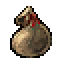
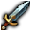

What it does
Everything a leveling run needs, self-contained
Ships with its own bundled coordinate database, then keeps correcting and filling it in from your own play.
Smart navigation arrow
Points you toward your next quest objective or turn-in automatically — no separate addon needed to know which way to walk.
Learns as you play
Quest giver, turn-in, and objective locations are saved to a shared learned database, filling gaps in the bundled data over time.
Nearby quest suggestions
Filtered by level range, real bitwise faction checks, reputation requirements, and completion history checked against the server — not just what this addon has seen before. Chain prerequisites are respected too, including "must complete all/any of these," "only while another quest is active," and mutually exclusive siblings, plus quests that need a specific item in hand before they'll even let you interact.
Share what you've learned
Live sync with your party, raid, or guild applies newly learned locations in real time — kill/collect spawn points included, not just quest givers and turn-ins. No group? /aql export and /aql import trade your whole learned history with another player anytime — never overwriting what you already have.
Live kill-tracking
Kill something in a spawn cluster and its dot disappears until it would plausibly be back, instead of showing a static cluster regardless of what's actually alive right now. Respawn timing starts as a reasonable guess and gets more accurate over time as the addon learns each NPC's real interval from repeated observation.
Snooze any quest
/aql sleep pulls an available-to-pick-up quest out of rotation — on every character on the account — until you wake it back up whenever you're ready.

Multi-floor detection
Standing right on the pin with nothing there usually means a floor above or below. Confirm it once and the addon remembers — applied to every other point in that same spawn cluster too, not just the one spot.
Self-correcting gating
PvP-flag and reputation requirements aren't documented anywhere for this server — so the addon learns them directly from the game's own error messages the first time you actually hit one, and stops suggesting that objective until it's genuinely possible again.
Zone-only tracker view
Optional filter to show only quests relevant to the zone you're actually standing in, instead of every tracked quest across every zone stacked on top of each other. Pinned quests always stay visible regardless.

Quest item buttons
A small movable panel puts the icon for "use this on the objective" items, like an Essence Extractor, one click away.
Hand-verified travel routes
Cross-zone quests get a real route or a precise checkpoint for the arrow to aim at, instead of a generic "fly there."
In-game quest tracker
A tracker panel that can stand in for Blizzard's default one, built to match everything else the addon already knows.
Map & minimap nodes
Quest givers and objectives show up right on the map and minimap, clustered so a busy zone stays readable.

Route planner
Suggests an order to tackle your active quests, clustering nearby ones so you clear an area instead of backtracking.
Zone completion tracking
See how many known quests you've finished in your current zone, and what's still left to pick up.
Quest chain preview
Shows the next quest in a chain, when one is known, right as you're about to turn something in.
Alliance & Horde
Both factions are fully supported, with the same learning database shared underneath.
Optional TomTom integration
If TomTom is installed, waypoints can be set automatically. If it isn't, everything still works without it.
Note: this server runs a custom class roster different from vanilla/WotLK's standard nine classes, so class-restricted quests are not filtered out of Available Quest suggestions — there's no reliable way to check that here.